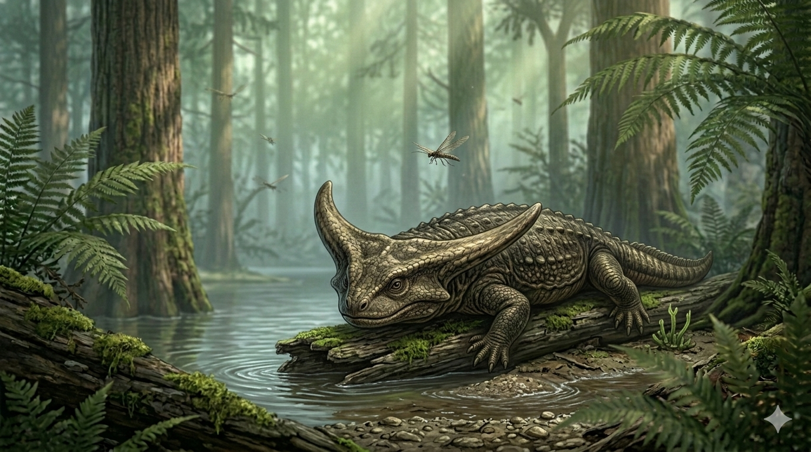

דיפלוקאולוס
The Boomerang Head: Diplocaulus magnicornis

תיק מחקר: נתונים אבולוציוניים
תקופת פעילות
299 עד 251 מיליון שנה
שלהי הקרבון עד סוף תור הפרם
מסה גופנית (משקל)
5 עד 10 קילוגרם
משקל קל יחסית המותאם לעילוי הידרודינמי
ממדים (אורך)
כ-1.0 מטר
רוחב הראש לבדו הגיע לעד 50 ס"מ
מיקום גיאוגרפי
אמריקה הצפונית
בעיקר בטקסס ואוקלהומה. ממצאים בודדים ממרוקו.
סיווג טקסונומי קריטי
דו-חי מקבוצת הלפוסינופונדילים (Lepospondyli)
קבוצת דו-חיים קדומים המאופיינים במבנה חוליות פשוט. הדיפלוקאולוס היה הגדול והמפורסם שבהם.
01 // ניתוח אטימולוגי נרחב
| החלק בשם | שפת מקור | פירוש ומשמעות |
|---|---|---|
| Diplo- | יוונית (διπλόος) | כפול מתייחס למבנה הייחודי של החוליות (Diplospondyly) המעניק גמישות. |
| -caulus | יוונית (καυλός) | גבעול / ציר תיאור של ציר עמוד השדרה. השם הוענק ב-1877 על ידי א.ד. קופ. |
| Magnicornis | לטינית | גדול-קרן תיאור של ה"בומרנג" המורכב מקרני עצם מוארכות המסתעפות מצדי הגולגולת. |
02 // תולדות הגילוי: אוצרות מחוז ביילור
הפאזל של קופ (1877)
אדוארד דרינקר קופ גילה את השרידים הראשונים ב"שכבות האדומות" (Red Beds) של טקסס. הממצאים היו חלקיים וכללו בעיקר חוליות. בשל רוחבו הבלתי הגיוני של הראש, בתחילה סברו החוקרים שמדובר במספר חיות שונות שנמחצו יחד לכדי מסה אחת.
המשלחות של אלפרד רומר
הפריצה המשמעותית התרחשה בשנות ה-30. הפלאונטולוג אלפרד רומר (Alfred Romer) מהרווארד הוביל משלחות ל**מחוז ביילור (Baylor County)** בטקסס. הם חשפו ריכוז מאובנים אדיר בתצורת Arroyo, שזכה לכינוי **"בית הקברות של הדיפלוקאולוס"**.
מספר הפריטים ומצב השימור
באתר החפירה התגלו **למעלה מ-30 שלדים משמעותיים**, רבים מהם **שלמים ומחוברים (Articulated)** ברמה של כמעט 100%. השימור היה כה מושלם, שהגולגולות הרחבות נותרו שטוחות ומושלמות בתוך שכבות הבוץ שהתקשה במהירות כתוצאה מהתייבשות אגנים עונתיים.
**גילוי האלומטריה:** מציאת שלדי צעירים לצד בוגרים הוכיחה שהדיפלוקאולוס נולד עם ראש עגול, וצורת הבומרנג התפתחה רק בשלב הבגרות.
ביומכניקה: הבומרנג ההידרודינמי
עילוי הידרודינמי (Hydrofoil)
ניסויים במנהרות רוח הוכיחו שראשו של הדיפלוקאולוס פעל ככנף מטוס. בזרם מים, מבנה הראש יצר כוח עילוי חזק שהרים את החיה מהקרקעית לעבר טרפה במהירות שיא וללא מאמץ שרירי רב.
מבנה ה"לביבה"
גופו השטוח ועיניו הממוקמות בחלק העליון איפשרו לו להסתתר בבוץ הקרקעית תוך תצפית אל עבר המים שמעליו.
מנגנון הגנה פסיבי
רוחב הראש המוגזם הפך אותו לבלתי ניתן לבליעה עבור טורפים כמו האריופס או הדימטרודון. ה"בומרנג" פשוט הפך ל"עצם בגרון" עבור כל מי שניסה לבלוע אותו בשלמותו.